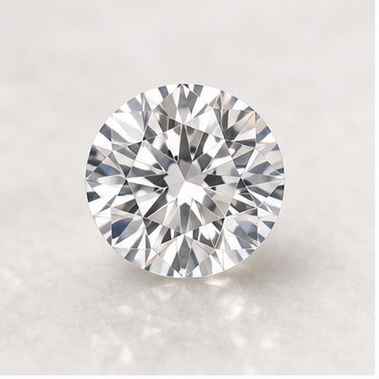
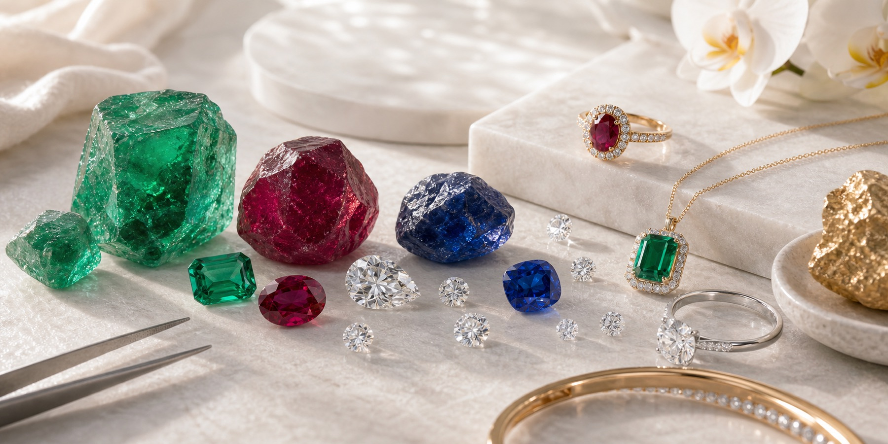
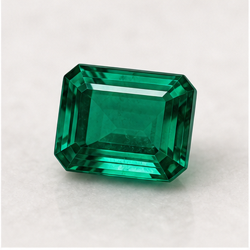
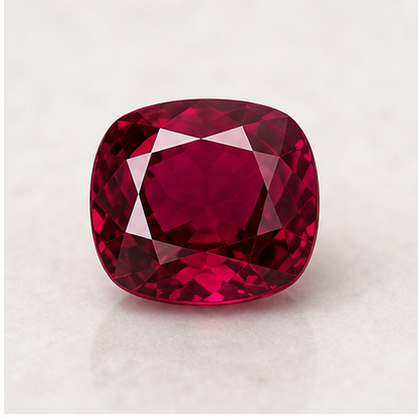
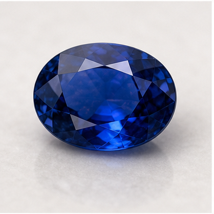
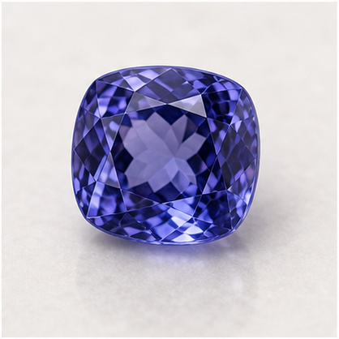
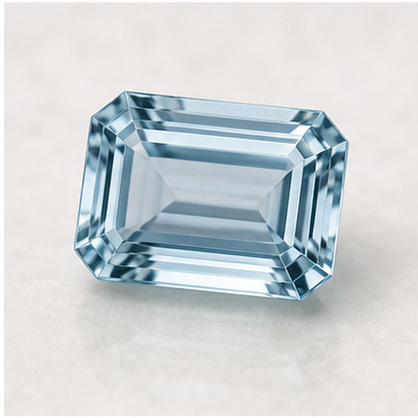
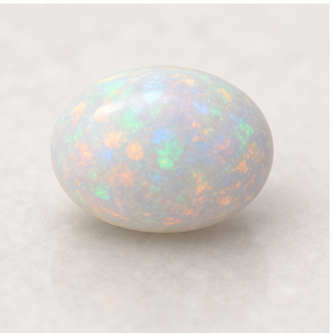
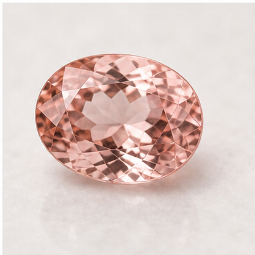

Diamonds
Selected for brilliance, structure, and enduring value, our diamonds anchor both collector-level acquisitions and refined bespoke jewelry.

Gemstones
Our gemstone offering is arranged to make colour, cut potential, and finishing possibilities easy to compare. Selection is guided by rarity, optical character, presentation potential, and the confidence that comes from stronger origin awareness.

Selected for brilliance, structure, and enduring value, our diamonds anchor both collector-level acquisitions and refined bespoke jewelry.

Known for depth of colour, internal character, and a timeless place in fine jewelry, emeralds remain central to our coloured stone story.

Collected for vivid tone, rarity, and exceptional presence, rubies bring urgency and fire to high jewelry and collector pieces alike.

Favored for richness, durability, and an extraordinary range of blue expression, sapphires support both classic and contemporary design language.

Its violet-blue depth and distinctive optical personality make tanzanite a compelling stone for collectors seeking rarity with elegance.

Aquamarine offers airy clarity and a calm blue presence that translates beautifully into clean, sculptural fine jewelry.

Prized for their living play of colour, opals bring movement, softness, and an unmistakably artistic quality to select pieces.

Tourmaline introduces vibrant range and personality, from cool greens to dramatic pinks, making it ideal for expressive color-led design.

Its gentle blush tone and luminous clarity give morganite a romantic, contemporary appeal across bespoke bridal and occasion jewelry.